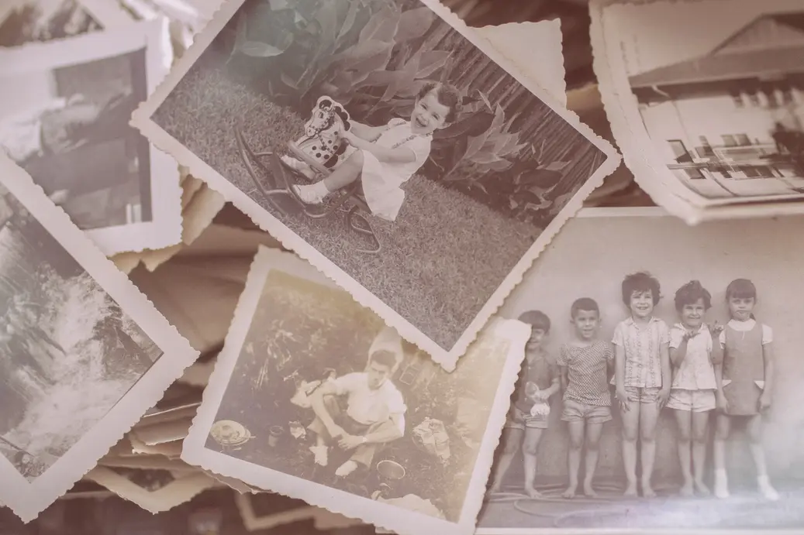

Les souvenirs sont nos forces. Quand la nuit essaie de revenir, il faut allumer les grandes dates, comme on allume des flambeaux.
Que raconter ?
-
Soit votre parcours de vie et les différentes étapes qui ont jalonné votre existence.
-
Soit un épisode important de votre vie : votre enfance, un mariage, une rencontre, la naissance d’un enfant, une adoption, un voyage, l’épreuve de la maladie, un départ à la retraite, la construction d’une maison...

Crédit: @rodolfoclixQui suis-je ?
Professeure de français depuis plus de 25 ans (Capes de lettres modernes) dans le département de l'Isère, je suis également biographe (formation auprès d'Isabelle Sarcey - Iscriptura). J’aime marier ces deux activités qui me permettent d’établir un contact privilégié avec les mots et de favoriser la transmission.

Tous les êtres m’intéressent : ceux que la littérature me donne à découvrir et ceux que la vie m’offre de rencontrer. J’ai observé très tôt que la vie ordinaire se révèle, même dans son apparente simplicité, aussi intéressante et foisonnante que la fiction. Toute existence mérite d’être racontée. Toute histoire est un legs de grande valeur.
Je suis là pour vous aider à retranscrire vos souvenirs, à les mettre en forme afin de restituer votre histoire, les cabosses comme les victoires.